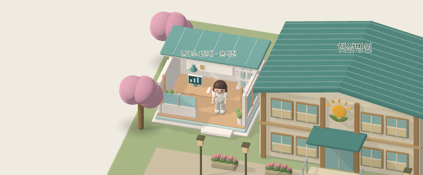
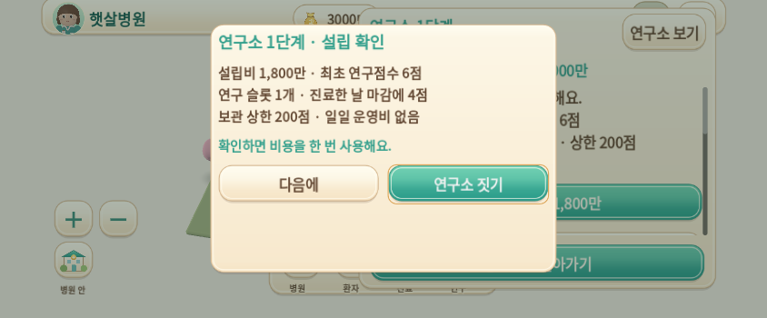
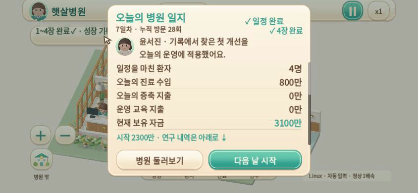
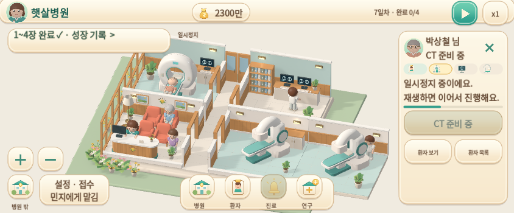

기록이 바꾸는 하루
챕터 4 · 연구소 1단계 · 실제 운영에 적용되는 두 연구
0.6.0-dev · Godot 4.6.3 · 빌드 소스 0c23ad3
구현·기획 차이·검증·다운로드 안내 · 검사 및 빌드 식별 기록
영상은 Linux 실제 Godot 실행, 자동 입력, 정상 1배속입니다. Android/iPhone 실기기 영상이 아닙니다. 녹화 24fps는 게임 성능 측정값이 아닙니다. 시작 저장과 중간 구간은 정상 운영 명령으로 준비했으며 자금·연구·완료 기록을 임의로 수정하지 않았습니다. 영상 소스는 76a84f2이며 최종 빌드에는 이후 확인된 연구 카드·일지 터치 스크롤과 Web 폰트 기호 수정이 포함됩니다. 운영·모델·모션은 동일하고 최종 터치는 별도 Web 검사로 확인했습니다.
1. 예정지 → 연구소 설립 → 윤서진 · 27초
5일차 시작, 3장 완료·보유 자금 3,000만에서 시작합니다. 예정지 선택 → 1,800만 확인 → 실제 3D 건물과 최초 6점 → 사용자가 요청한 상세 시점 → 연구 담당의 짧은 소개. 한 구간을 연속 녹화했습니다.
2. 연구 선택 → 운영일 마감 → 완료 대기 · 34초
5일차 연구소 설립 직후 1,200만·6점에서 CT 연구를 직접 시작해 700만·0점이 됩니다. 16초에 정상 운영으로 준비한 6일차 마감 직전 저장으로 구간을 전환합니다. 실제 마지막 귀가 후 연구 완료, 2,300만·8점, 7일차 적용 대기를 확인합니다. 중간 운영일 전체를 연속 녹화한 영상은 아닙니다.
3. 다음 날 적용 → CT 4초 → 저장·4장 일지 · 55초
6일차 일지에서 다음 날 버튼을 누릅니다. 7일차 입장 전 연구 적용·4장 완료 → 실제 CT 4초 동작 → 같은 테스트 파일 저장·복원 → 성장 기록. 40초에 정상 운영으로 준비한 7일차 마감 직전 저장으로 전환해 실제 귀가 후 4장 도장·소감·연구 기록을 봅니다. 별도 프로세스 재시작은 추가 저장 수명주기 검사로 확인했습니다.
작은 화면과 실제 3D
844×350·844×390·915×412·1280×720에서 확인했습니다. 작은 화면에는 좌우 47·하단 21 픽셀 안전 영역을 모사했습니다. 연구·일지 내용은 스크롤하고 필수 버튼은 별도로 유지합니다.

Blender 원본과 GLB를 사용한 실제 건물

1,800만 설립 확인 · 취소는 거래 없음

실제 효과 적용 후의 4장 완료 일지 · 영상에서 추출

Chromium의 실제 Web 빌드 · 실기기 아님
직접 해보기
3장 완료 → 병원 밖 연구소 예정지 → 설립 1,800만 → 연구 하나 선택(500만+6점). 시작 다음 날 마감에 완료되고 그다음 날부터 적용됩니다. 연구를 미뤄도 병원 운영은 계속할 수 있습니다.
Mac에서는 전달된 Web ZIP을 KMH/05_게임의 새 폴더에 풀고 iPhone 체험 열기.command를 엽니다. iPhone은 같은 Wi-Fi에서 표시된 Mac 주소로 접속합니다. 기존 Android 앱은 삭제하지 않고 APK로 업데이트합니다. 실제 Mac LAN·iPhone Safari·Android 기기 실행은 확인이 필요합니다.